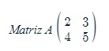
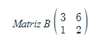
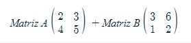
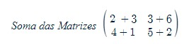
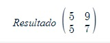
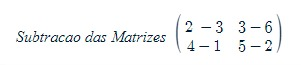
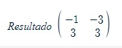

Soma e Subtração de matrizes
A soma de matrizes é uma operação matemática que envolve a adição dos elementos correspondentes de duas matrizes para formar uma nova matriz resultante. Para que a soma seja possível, as matrizes devem ter as mesmas dimensões, ou seja, o mesmo número de linhas e colunas.
Suponha que tenhamos duas matrizes A e B com as mesmas dimensões:
 A soma de A e B, denotada por A + B, é calculada somando os elementos correspondentes:
  A subtração de matrizes é uma operação matemática que envolve a subtração dos elementos correspondentes de duas matrizes para formar uma nova matriz resultante. Para que a subtração seja possível, as matrizes devem ter as mesmas dimensões, ou seja, o mesmo número de linhas e colunas.
Utilizarmos para esse exemplo as mesmas matrizes de soma, mas ao invés de adicionarmos, iremos subtrair a matriz B da matriz A:
 Assim, a matriz resultante terá os elementos obtidos pela subtração dos elementos de B de seus respectivos elementos de A. Tal como acontece com a soma de matrizes, a operação de subtração é realizada elemento por elemento.